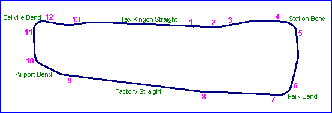
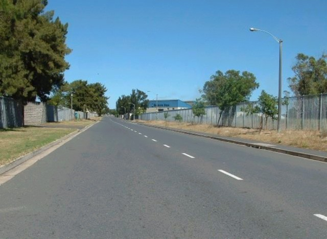
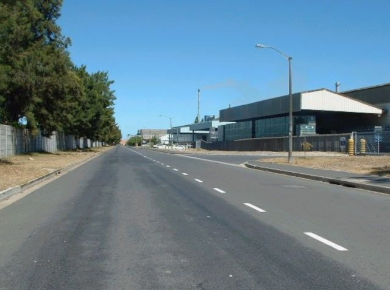
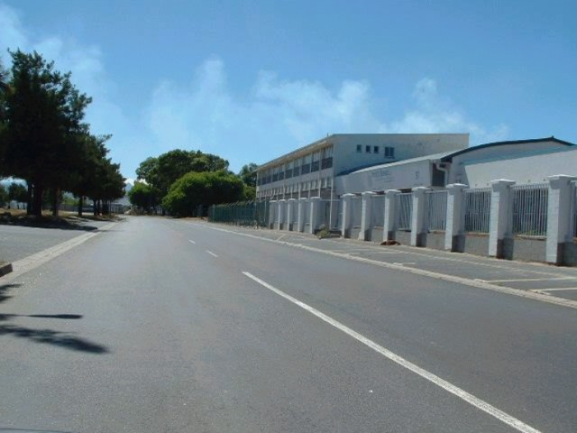
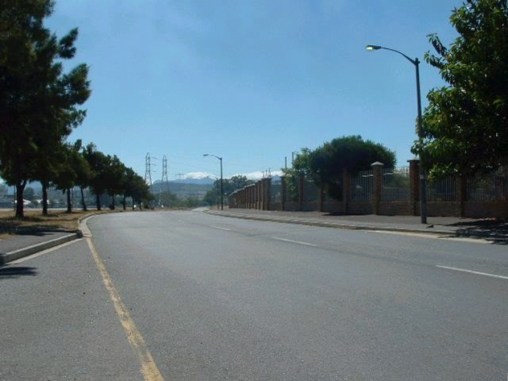

Sacks Circle - Factory Straight, Airport Bend & Bellville Bend
|| Contents || Tex Kingon Straight to Park Bend (1-6) | Factory Straight to Bellville Bend (7-13) || Home ||

Numbers on the map represent the location where the photographs were taken. Click
on links above to view the photographs.
Return to racingcircuits.net's Photo Archive Main Index

7 - Factory Straight (first sector).

8 - Factory Straight (second sector).

12 - Kink after Bellville Bend.

13 - Kink and view down Tex Kingon Straight
leading to the Finish line.
Text & Graphics ©Marius Matthee. Reproduced here with kind permission.